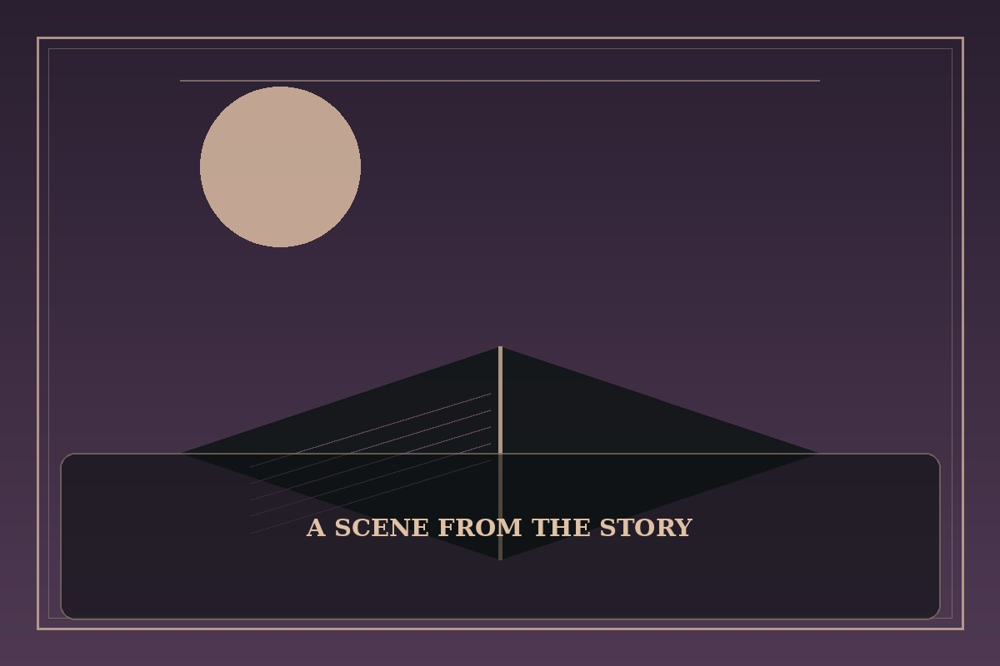

Unholy Blood
Synopsis
A young woman with a hidden supernatural identity is forced to confront a violent secret world. Protecting ordinary people means balancing immense power with the desire to remain human.
Chapter 1: Blood Beneath the Moon
The moon turned the rooftop silver as Hana found the injured stranger beside the water tank. He recoiled when he saw her eyes, recognizing the sign of a bloodline people feared long before they knew her name.
Hana could have left him to the hunters searching the district. Instead, she wrapped his wound and asked who had attacked him. His answer revealed that the violence was not random: someone was targeting families whose histories had been erased from public records.
At dawn, Hana stood between the stranger and the approaching hunters. She did not deny what she was, nor did she let fear decide what she would do. The first step toward peace would not be proving she was harmless; it would be refusing to become cruel simply because others expected it.

This fan-made sample is an original piece created for a student website project; it is not an official chapter of Unholy Blood.